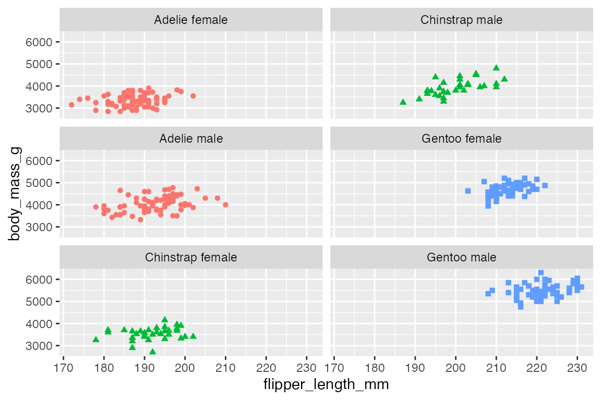
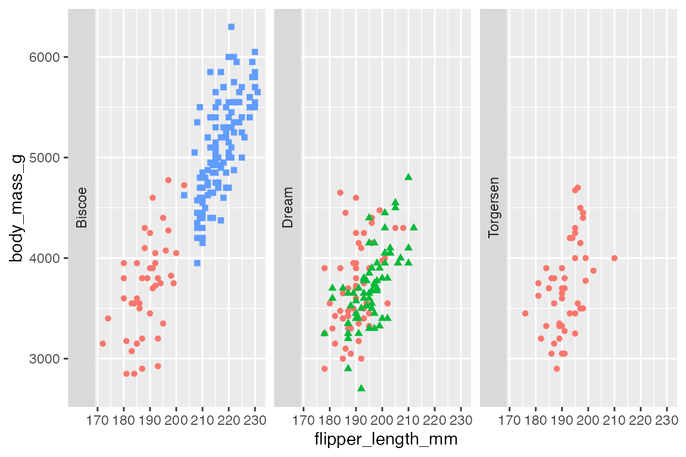
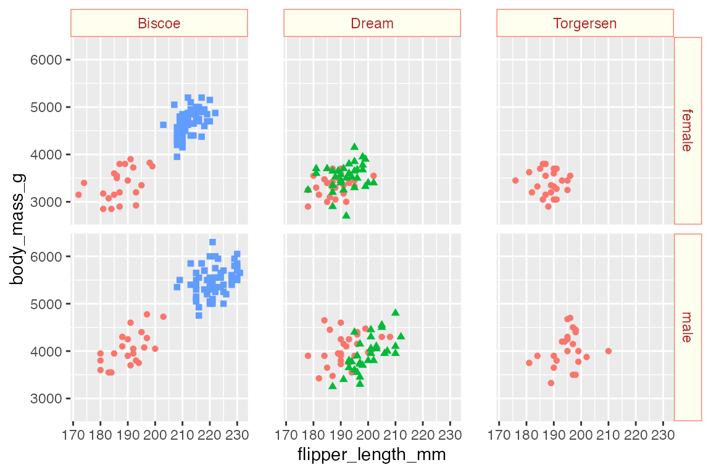

library(ggplot2)
library(dplyr)
library(forcats)
library(palmerpenguins)
library(gghighlight)
# Data
penguins <- penguins |>
filter(!is.na(flipper_length_mm),
!is.na(sex)) |>
# Add factor data that has more levels
mutate(species_sex = as.factor(
paste(species, sex)))
# Base plot
p <- penguins |>
ggplot(aes(x = flipper_length_mm,
y = body_mass_g,
color = species,
shape = species)) +
geom_point() +
theme(legend.position = "none")22 Facets
Faceting allows you to create multiple plots that each show different subsets of the data. ggplot2 provides two types of faceting. facet_wrap() creates a sequence of plots that subset the data by one or more categorical variables. facet_grid() creates a two-dimensional grid that provides a manner to compare groups along both the x and y axes.
22.1 Resources
- Faceting documentation
- ggplot2 Cheatsheet: Faceting
- Wickham, ggplot2 Book: Facets
- Cedric Scherer, A ggplot2 Tutorial: Facetting
22.2 facet_wrap()
Create a facetted plot by adding facet_wrap() to a plot and using a formula to choose what variable to facet by. The formula can be created with either ~ or vars().

Using facet_wrap() with multiple variables serves to extend the sequence of plots and adds a second level to the plot labels.
p +
facet_wrap(vars(island, sex))22.2.1 Facet layout
To change the order of the facets change the levels of the underlying factor used for faceting. For instance, you can reorder the species_sex variable by frequency with forcats::fct_infreq(), which leads to a sequence of Adelie, Gentoo, Chinstrap rather than the default alphabetical order of Adelie, Chinstrap, Gentoo.
p +
facet_wrap(vars(fct_infreq(species_sex)))The organization of the sequence of plots is controlled by the arguments ncol, nrow, as.table, and dir.
ncol and nrow tell how many columns or rows to create for the plot.
# ncol
p +
facet_wrap(vars(species_sex),
ncol = 2)
# nrow
p +
facet_wrap(vars(species_sex),
nrow = 6)as.table = TRUE, the default, moves from the top-left across to the bottom-right. as.table = FALSE begins the sequence from the bottom-left and moves across to the top-right.
p +
facet_wrap(vars(species_sex)) +
labs(title = "as.table = TRUE")
p +
facet_wrap(vars(species_sex),
as.table = FALSE) +
labs(title = "as.table = FALSE")dir can be either "h" for horizontal, the default, or "v" for vertical. As shown below, this can also affect the number of rows and columns in which the facets are laid out.
p +
facet_wrap(vars(species_sex),
dir = "h")
p +
facet_wrap(vars(species_sex),
dir = "v")
22.3 facet_grid()
facet_grid() lays out facets in a two-dimensional grid by rows and/or columns. As with facet_warp() this can be done with either vars() or the tilde formula with rows on the left-hand side and columns on the right-hand side. A dot in the formula is used to indicate there should be no faceting on this dimension.
Faceting along only one dimension essentially replicates facet_wrap().
p +
facet_grid(rows = vars(island))p +
facet_grid(cols = vars(island))
Use both rows and cols to create a two-dimensional grid, which is the main use case for facet_grid().
p +
facet_grid(rows = vars(sex),
cols = vars(island))Multiple variables can be placed in either rows or cols to add more variables to the faceting.
p +
facet_grid(rows = vars(year),
cols = vars(island, sex)) +
scale_x_continuous(n.breaks = 4)22.3.1 Grid layout
As with facet_wrap() you can change the order of the facets by reordering the underlying levels of the faceting factor.
p +
facet_grid(rows = vars(sex),
cols = vars(fct_rev(island)))You can also use the as.table argument as in facet_wrap().
p +
facet_grid(rows = vars(sex),
cols = vars(island),
as.table = FALSE)
22.4 Scales
By default the scales for the x and y axes are “fixed” so that they are the same in all of the plot facets. Use the scales argument to change this behavior to be free in one dimension ("free_x", "free_y") or in both dimensions ("free"). Making scales free in one or both dimensions make it more difficult to see patterns across the facets, but it make it easier to see patterns within each facet.
The scales argument works slightly differently in facet_wrap() and facet_grid(). In facet_wrap() each plot gets its own scales. In facet_grid() the scales are maintained across a dimension. Note how facet_grid() maintains the labeling of scales on the left and bottom of the grid with "free" scales, while facet_wrap() must label the scales for each individual facet.
# Free scales: facet_wrap()
p +
facet_wrap(vars(species_sex),
scales = "free") +
labs(title = "facet_wrap()")
# Free scales: facet_grid()
p +
facet_grid(rows = vars(sex),
cols = vars(island),
scales = "free") +
labs(title = "facet_grid()")facet_grid() has an additional feature through the space argument. The default is for the space of each plot to be "fixed" as equal in size even when scales = "free". The space taken up by each plot can be changed to "free", "free_x", or "free_y" so that less space is taken up by plots that have smaller scales.
p +
facet_grid(rows = vars(sex),
cols = vars(island),
scales = "free",
space = "free")22.5 Including other data
One way to compare each facet panel to the rest of the data is to include the whole data set grayed out. This can be done by adding another geom layer that does not include the faceting variable.
penguins |>
ggplot(aes(x = flipper_length_mm,
y = body_mass_g)) +
geom_point(data = select(penguins, -island),
aes(shape = species),
color = "gray80") +
geom_point(aes(color = species, shape = species)) +
theme(legend.position = "none") +
facet_wrap(vars(island))The process is the same with facet_grid():
penguins |>
ggplot(aes(x = flipper_length_mm,
y = body_mass_g)) +
geom_point(data = select(penguins, -island, -sex),
aes(shape = species),
color = "gray80") +
geom_point(aes(color = species, shape = species)) +
theme(legend.position = "none") +
facet_grid(rows = vars(sex),
cols = vars(island))This process can be done automatically with gghighlight, see Annotations: gghighlight.
p +
gghighlight(use_direct_label = FALSE) +
facet_wrap(vars(island))
p +
gghighlight(use_direct_label = FALSE) +
facet_grid(rows = vars(sex),
cols = vars(island))
22.6 Labeling facets
22.6.1 Label position
To change the position of the labels use strip.position in facet_wrap() and switch in facet_grid(). strip.position takes any of the four sides: "top", "bottom", "left", "right".
p +
facet_wrap(vars(island),
strip.position = "left")
By default, facet_grid() positions the labels of two-dimensional grids on the top and right. You can change to use of the bottom, left, or both with switch. switch takes one of "x", to move the labels along the x-axis to the bottom, "y", to move the labels along the y-axis to the left, or "both" to change the placement of both the x and y axes.
p +
facet_grid(rows = vars(sex),
cols = vars(island),
switch = "x")22.6.2 Labeller
The labeller argument allows you to control and tweak the labels used for the facets. You can use the labeller() function to modify the labels, creating your own changes. There are also a set of helper labeling functions. The most important are label_value(), the default, and label_both(), which uses both the variable name and the value. These can be used in a variety of ways: as arguments within labeller() or directly in the labeller argument. The difference is in the control that you have.
p +
facet_grid(rows = vars(sex),
cols = vars(island),
labeller = labeller(sex = label_both))
p +
facet_grid(rows = vars(sex),
cols = vars(island),
labeller = label_both)label_context() is another useful option. It only used label_both when multiple variables are faceted along one axis.
p +
facet_grid(rows = vars(year),
cols = vars(island, sex),
labeller = label_context) +
scale_x_continuous(n.breaks = 4)You can also create your own transformation with either a look-up table or with a functional change. For instance, change “female” and “male” labels to be capitalized with stringr. See the example in Cédric Scherer’s RStudio conf 2022 ggplot2 workshop, Section 13.7.4.
p +
facet_grid(rows = vars(sex),
cols = vars(island),
labeller = labeller(
sex = stringr::str_to_title))22.7 Facet theme elements
See Section 23.5.7 for more information on theme elements that affect faceted plots. The main elements are strip.background, which uses element_rect(), strip.text, and panel.spacing.
p +
facet_grid(rows = vars(sex),
cols = vars(island)) +
theme(
strip.background = element_rect(fill = "ivory", color = "salmon"),
strip.text = element_text(color = "firebrick"),
panel.spacing.x = unit(0.05, "npc")
)
22.7.1 ggtext
If you want to get fancy with the labels, they can be replaced with text boxes from the ggtext package. See Section 23.9 for more on using ggtext theme elements. The ggtext README provides a good example of creating text boxes for facet labels. element_textbox() is used instead of element_markdown() so that the width of the labels can be controlled. To produce labels along both x and y axes it is necessary to create text boxes for both strip.text.x and strip.text.y and to make sure that the y-axis labels are oriented "right-rotated".1 The arguments for these labels are taken directly from the ggtext README.
p +
facet_grid(rows = vars(sex),
cols = vars(island)) +
theme(
strip.background = element_blank(),
strip.text.x = ggtext::element_textbox(
size = 12,
color = "white", fill = "#5D729D", box.color = "#4A618C",
halign = 0.1, linetype = 1, r = unit(5, "pt"),
width = unit(1, "npc"),
padding = margin(2, 0, 1, 0),
margin = margin(3, 3, 3, 3)
),
strip.text.y = ggtext::element_textbox(
size = 12,
color = "white", fill = "#5D729D", box.color = "#4A618C",
orientation = "right-rotated",
halign = 0.1, linetype = 1, r = unit(5, "pt"),
width = unit(1, "npc"),
padding = margin(2, 0, 1, 0),
margin = margin(3, 3, 3, 3)
)
)This can be mostly replicated with strip.background and strip.text, though without the roundrect shape, which is not possible with element_rect().
p +
facet_grid(rows = vars(sex),
cols = vars(island)) +
theme(
strip.background = element_rect(
fill = "#5D729D", color = "#4A618C"
),
strip.text = element_text(
color = "white", size = 12,
hjust = 0
)
)Just using
strip.text, as done in the README, does not create labels on the y axis.↩︎